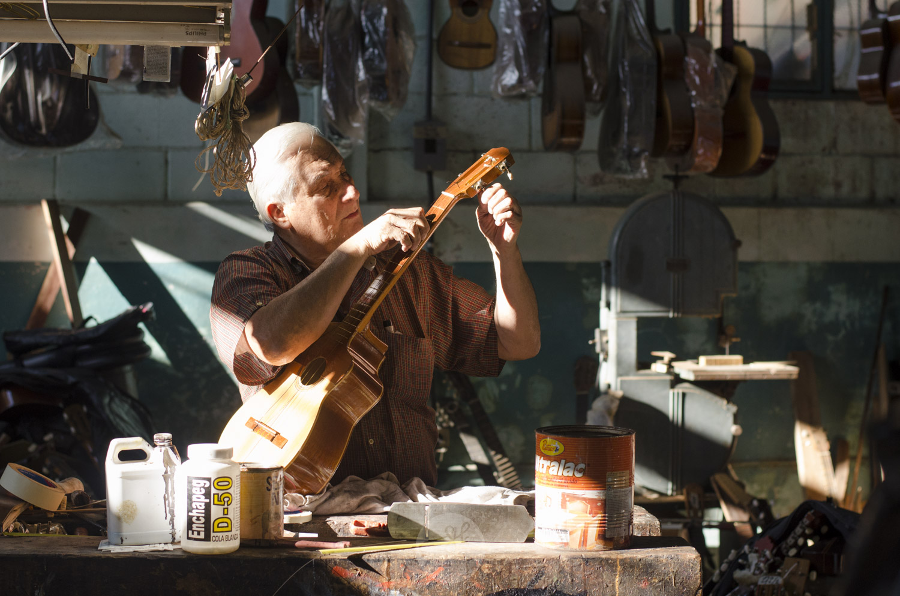
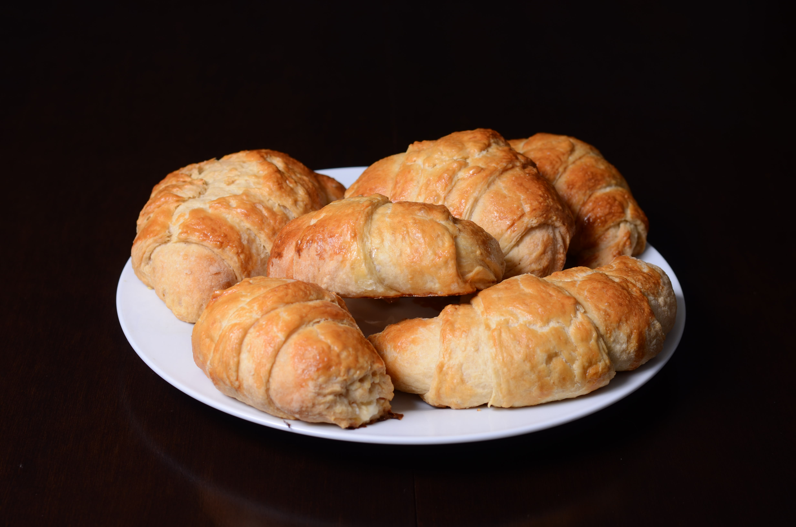

CCS - Fotógrafía
Héctor
AOM
Hablemos
Hola,
: )

Retratos
Un retrato cuenta una historia mejor que un extenso discurso.
Lo que quieras contar un buen retrato lo hace a la perfección.
Familia
Qué mejor recuerdo
que un retrato de hoy
visto mañana o pasado.
Embarazos
La familia crece
y los recuerdos comienzan
desde antes de la llegada
del nuevo integrante.
Arquitectura
Un edificio no vende
si no se ve.
Yo te ayudo a mostrarlo.

Producto
¿Un emprendimiento?
Para que tenga éxito debe venderse.
Branding
Consolidar una marca requiere mas que un logo.
Necesitas imágenes que te respalden.
Yo en
Twitter
Yo en
Mastodon
Otras fotos en
Instagram